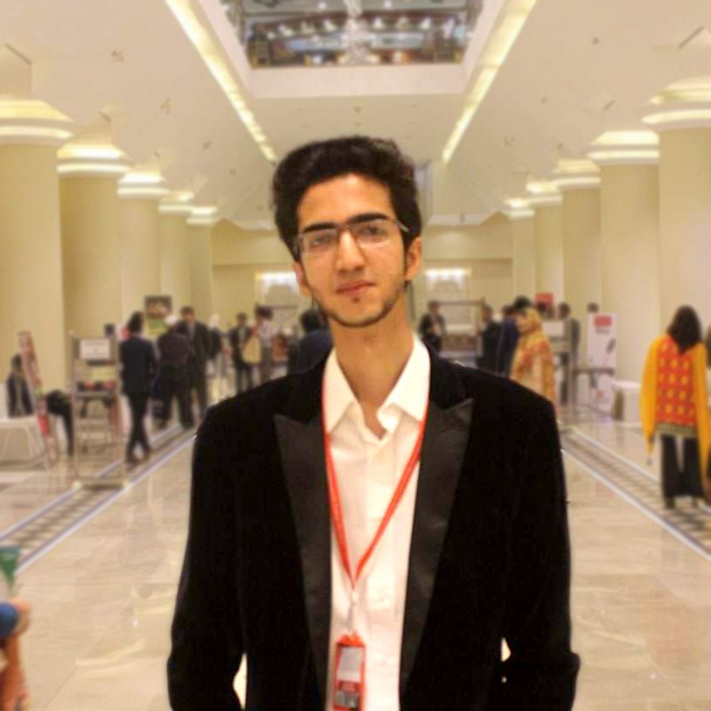

|  |
Hafiz Mohammad Sohaib
A passionate Video Editor.
To edit videos with unique audio visual style,
creating a vibe and making client satisfied by necessary
revisions to our video, so that I can serve the client or
firm to the best of my efforts. |
Work Experience
A passionate Freelance Video Editor and with 4 years of experience in creating different genres
of videos for my University and a Pakistani TV celebrity.
Founder of media series (IAS Media) at IAS, University of The Punjab
International Conference on Governance, Management & HR; Strategic Directions
Responsible mainly for
- Video reporting of the Conference, interviewing the delegates & editing the clips
- Social Media Marketing of the Conference
Volunteer work in many events including:
- Thalassemia Awareness & Blood Donation Motivational Session
- Annual Career Fairs at Punjab University
Responsible mainly for reporting, interviewing the guests & editing the clips
Awards & Ackowlgements
- First place winner of the Crypto Content Making Contest of TenUp coin from all over Pakistan.
- Created many show-reel videos for the Pakistani TV host celebrity & founder of TenUp crypto coin,
for his social platforms having 4 million followers.
Academic Qualification
Bachelors in Management Sciences (4 Years)
Major Subject: Marketing
Minor Subject: Supply Chain Management
Institute of Administrative Sciences (IAS)
University of The Punjab | 2016-20
Expertise
- Promotional Ads
- Instagram & TikTok Reels
- Short Films / trailers
- Travel Vlogs
- YouTube videos
- Presentations / Slideshows
- Wedding films
- Real Estate videos
- Show-reel videos
- Interviews videos
- Corporate video editing
- Funny editing/memes
Hire me
Share your idea and let me do it for you.